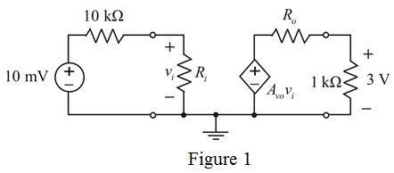

Calculate the overall current gain.

Hence, the current gain is .
Draw the voltage amplifier circuit.

(a)
Calculate the voltage gain required from the source to the load.
Thus, the voltage gain is.
(b)
Consider the maximum current drawn from the source end is .
Calculate the smallest input resistance.
Thus, the input resistance is .
Calculate the overall current gain.
Hence, the current gain is .
Calculate the power gain.
Hence, power gain is.
Consider the open circuit voltage, .
Calculate the output resistance.
Therefore, the output resistance is.
(d)
Consider the input resistance is, .
The output resistance is, .
Calculate the open circuit voltage gain.
Therefore, the voltage gain is .
(e)
(i)
The nearest value of input resistance is compared with  is,
is,
Therefore, the nearest value of input resistance is  .
.
(ii)
The nearest value of output resistance is compared with .

Therefore, the nearest value of output resistance is .
.
(iii)
Calculate the open circuit voltage gain.
Substitute  for
for  , for
, for  , for
, for  and for
and for  in the equation.
in the equation.
Therefore, the open circuit voltage gain is.